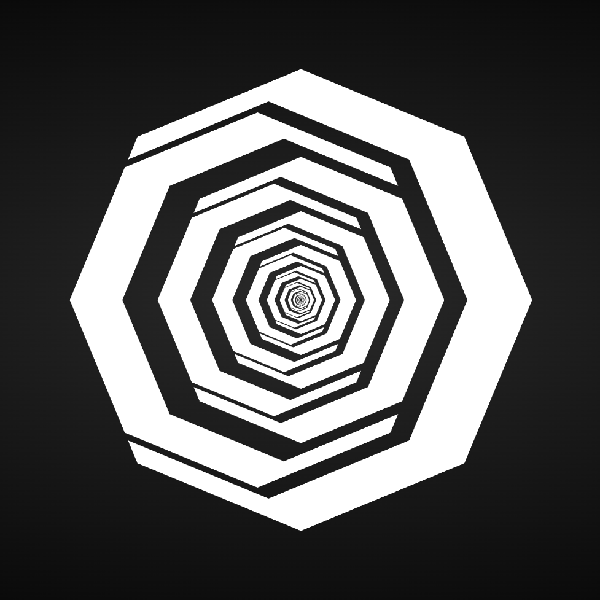
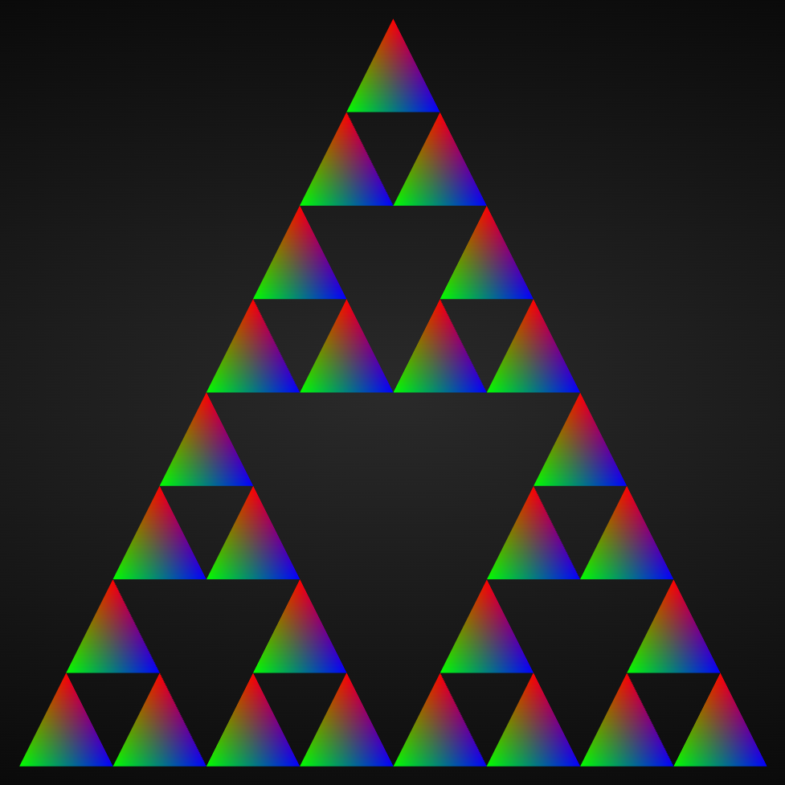
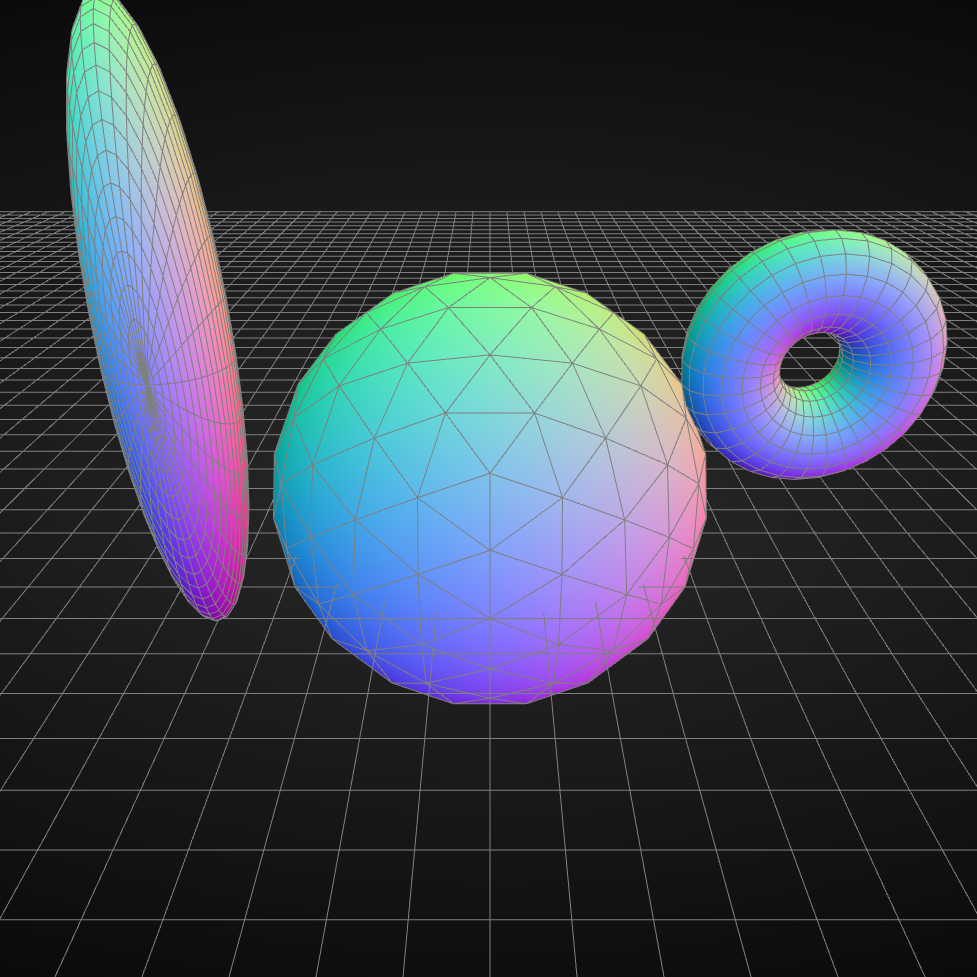
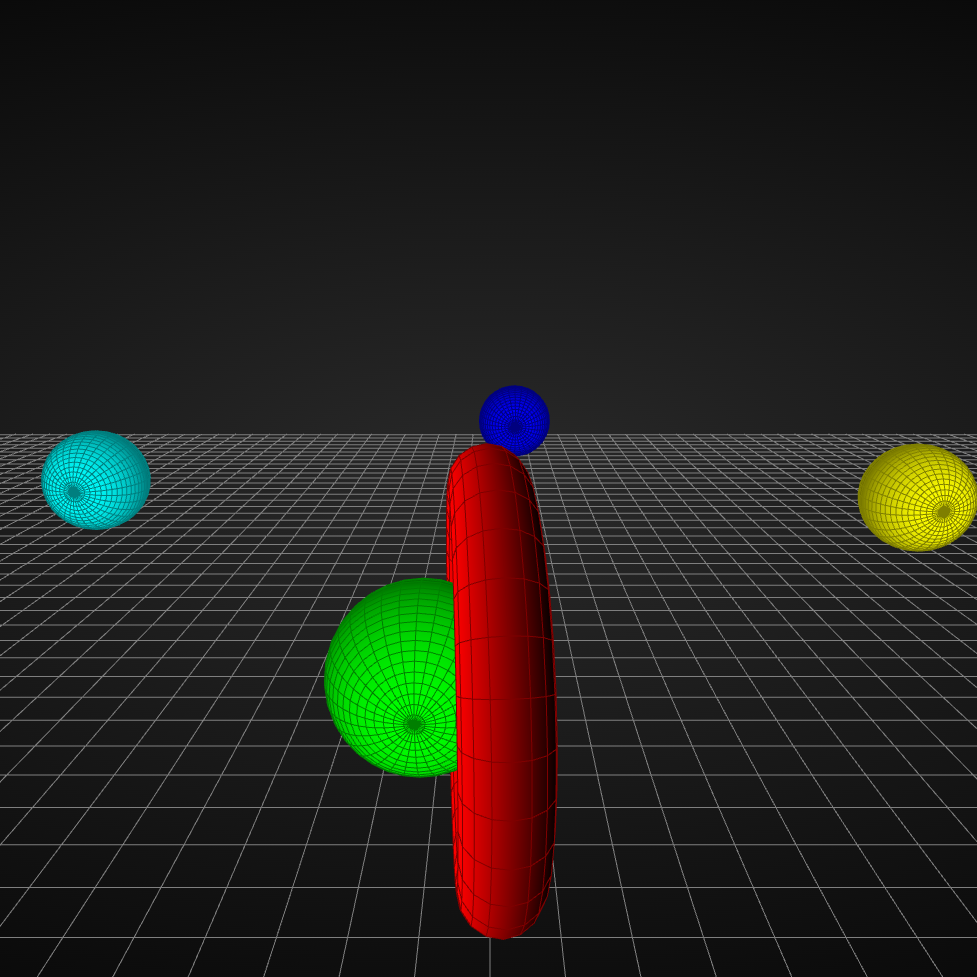
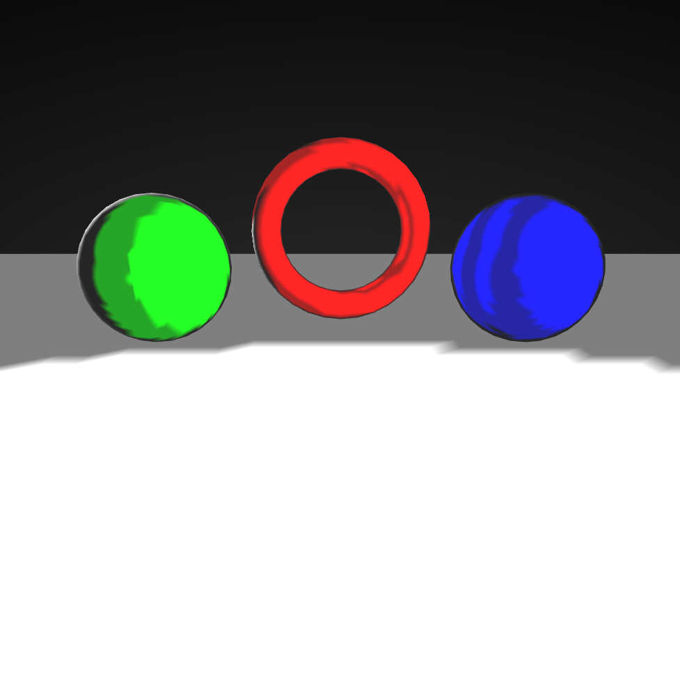

Interaktiv animierte Scheibe
2D Geometrie aus Linien

Farbig gefüllte 2D Geometrie

Parametrisierte Flächen

Kamerabewegung

Objekte bewegen - fliegende Kugeln
Z-Buffer Visualisierung

Lichter auf Kreisbahn mit Toon Shading
Torustextur